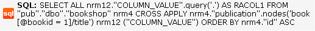
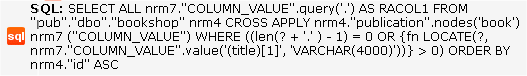

Querying Relational Data
In order to query relational data, DataDirect XQuery uses the SQL Adaptor to translate XQuery into one or more SQL statements that can be understood – and executed – by the database engine. Where possible, DataDirect XQuery leaves intact those XQuery expressions and constructs that are understood by the database engine. In other cases, DataDirect XQuery compensates for XQuery expressions and constructs for which there is no direct SQL translation.
Consider the following XQuery, which queries the pub relational database for the title element of the book whose bookid attribute equals 1:
<root> { for $book in collection("pub.dbo.bookshop")/bookshop/publication/book where $book/@bookid = 1 return $book/title } </root>When translated by DataDirect XQuery, the result is a single XQuery fragment embedded in the SQL statement, shown here using the Plan Explain feature:

(For more information on Plan Explain, see Generating XQuery Execution Plans.)
Notice that while the syntax between the XQuery expression and the SQL statement differs, the semantics are the same – the FLWOR expression’s for clause has been translated as part of the SELECT FROM statement; the where clause has been translated as the predicate; and so on.
But database engines might not always support XQuery functions one-to-one. Consider the following XQuery – it is similar to the preceding XQuery example in that it is querying the pub relational database, but the FLWOR expression where clause uses the XQuery contains function:
declare variable $title_fragment as xs:string external; for $book in collection("pub.dbo.bookshop")/bookshop/publication/book where contains($book/title, $title_fragment) return $bookWhile the result is still a single SQL statement, not all of the original XQuery is embedded. If we look at the SQL translation, we see that the XQuery contains function has been replaced by the SQL LOCATE function:

When XQuery functions are translated to SQL but are not embedded in the XQuery fragment, it is possible that some processing efficiencies, like indexes on the data, are lost. This can happen, for example, when the query results are placed in a transient table for additional processing.
XML and SQL Data Structures
Another difference that must be taken into account when using XQuery to query relational data is structure – the output of a SQL statement is a table (a flat structure), but the typical XML value is a tree. To achieve the required transformation of the result from a flat structure to a tree structure, DataDirect XQuery translates the query into two parts: an XML construction part and a SQL part. The XML construction part adds XML tags to the results retrieved from the database to create the hierarchy requested in the query.
Simplifying Generated SQL
The SQL statements that are translated from XQuery can be complex, but DataDirect XQuery supports options that create less complex Select statements. These simplified Select statements can improve performance in some cases.
The options discussed in this section affect only XQuery expressions that are executed by the SQL Adaptor, which translates the query into SQL.
String Comparisons and Trailing Spaces
Unlike XQuery string comparison, SQL character comparison is not sensitive to differences in trailing spaces. To accommodate this semantic difference, the SQL statements that DataDirect XQuery executes compare both the strings and the length of the strings.
For example, when comparing an Oracle fixed-width character column with a constant value, DataDirect XQuery executes a SQL statement that contains:
The length comparison can be avoided by adding the following option declaration to the query prolog:
Using this option declaration is also convenient when two fixed-width character columns with different lengths are used in a join condition. For example, assume the following two tables with a fixed-width character column that have different lengths:
and the following query
for $t1 in collection('table1')/table1 for $t2 in collection('table2')/table2 where $t1/col = $t2/col return ...Even when table1 and table2 contain rows where the col column contains the same value, by default, the values never match because the lengths are different. Adding ignore-trailing-spaces to the query prolog avoids this possible issue.
String Functions
While many XQuery functions that operate on strings have an equivalent SQL function, XQuery and SQL semantics often differ slightly. The most important differences are how the following string conditions are handled in XQuery functions versus SQL functions:
The result of these differences is that the generated SQL for string functions is complex. If both empty sequence and trailing space behaviors are not relevant, complexity can be avoided by adding the following option declaration to the XQuery prolog:
The result of using this option declaration is that DataDirect XQuery generates SQL that translates the XQuery function to the equivalent SQL function without taking into account trailing spaces, or empty sequence or empty string arguments.
Following is an overview of the XQuery string functions that are affected by the sql-simple-string-functions option declaration. The following examples assume that the expression is a part of a query that is being executed by the SQL Adaptor. Most of these examples apply to Microsoft SQL Server; however, similar considerations hold true for other databases.
Example: fn:string-length
Example: fn:ends-with
Example: fn:substring-after
- Trailing spaces are not handled correctly, for example:
fn:substring-after('abc def', 'abc ')returns def with a leading space.- Empty string arguments are not handled correctly, for example:
fn:substring-after('test', '')returns () instead of''.- Empty sequence arguments are not handled correctly, for example:
fn:substring-after('test', ())returns () instead of''.Example: fn:upper-case and fn:lower-case
Example: fn:substring
Example: fn:concat
Example: fn:contains
DB2 Decimal to String Cast
The default casting of DB2 decimal values to string values can result in strings with leading 0s, which is not XQuery-compliant. DataDirect XQuery generates SQL that removes these 0s. The resulting SQL gets fairly complex. This can be avoided by adding the following option declaration to the XQuery prolog:
This allows some casts of decimal values to strings to return strings with leading 0s.
Using an Order By Clause
Due to limitations of some SQL databases, it is not always possible to order a SQL result set on an expression that is not part of the Select list. DataDirect XQuery supports an option declaration that allows you to choose whether Order By clauses in the generated SQL are explicitly added to the Select list.
The option can be set by adding the following option declaration to the XQuery prolog:
- When set to yes, expressions on which to sort are not explicitly added to the Select list of generated SQL Select statements.
- When set to no, values or expressions on which to sort are always added to the Select list; although this typically decreases performance it is required by some databases.
- When set to noSubquery, the behavior is equivalent to yes except when the expression on which to sort is a subquery. In this case, the value noSubquery behaves as if no is specified.
The default value is database dependent:
There should be no reason to change the value for Microsoft SQL Server, Oracle, MySQL, or PostgreSQL; however, for DB2, Informix, and Sybase, many queries perform faster when the value is changed to yes.
NOTE: The noSubquery value can optimize the performance of some queries with DB2. When using this value, make sure you set the rewrite-exists-into-count option declaration to inCase (see Using a SQL EXISTS Subclause in DB2).
Example
For example, assume the XQuery expression below is executed against a Microsoft SQL Server database:
When order-by-on-values is set to no, the SQL statement executed is:
When order-by-on-values is set to yes, the SQL statement executed is:
Using a SQL EXISTS Subclause in DB2
The different DB2 systems impose limitations on the usage of the SQL EXISTS subclause. This option specifies whether to change an EXISTS subclause into a count() > 0 subclause. The option can be set by adding the following option declaration to the XQuery prolog:
Typically, you should not change the default setting, but some XQuery expressions executed against DB2 for z/OS and DB2 for iSeries perform better when this option is set to no. In addition, if order-by-on-values is set to noSubquery for DB2 for Linux/UNIX/Windows, you will get the best performance for the broadest set of queries if you set rewrite-exists-into-count to inCase.
Using BINARY_DOUBLE and BINARY_FLOAT Data Types (Oracle 10g and higher)
By default, DataDirect XQuery uses the Oracle NUMBER data type when converting to or constructing XQuery floats or doubles. You can change this behavior for Oracle 10g and higher by adding the following option declaration to the XQuery prolog:
When this option declaration is set to yes, DataDirect XQuery uses the BINARY_FLOAT and BINARY_DOUBLE data types.
Using DataDirect XQuery SQL Generation Algorithms
DataDirect XQuery uses four SQL generation algorithms, which result in different SQL statements when translating XQuery to SQL. Each algorithm takes a different approach to construct the requested XML hierarchy from the results returned from the SQL statements.
By default, DataDirect XQuery uses the merge join algorithm, which typically gives the best performance. However, when the XML structure is not too deeply nested, the outer join or sorted outer union algorithms give better performance. As a guideline, consider using either outer join or sorted outer union in cases where the XML nesting level is limited to four or less.
See Improving Performance for additional information about performance.
Merge Join
To construct a correct parent/child relationship, the merge join algorithm creates a first SQL statement that selects all parent values and sorts them on the unique columns of the parents. Then, a second SQL statement joins parent with child values and sorts them again on the unique columns of the parents. The results are processed by moving forward through the results of both SQL statements, linking parent with child node values based on the values of the unique columns.
The merge join algorithm typically gives the best performance. It is the default SQL generation algorithm.
Nested Loop
The nested loop algorithm creates a first SQL statement that selects all values for the parent nodes and a second SQL statement that, for each parent node, selects the values for the associated child nodes.
Use this algorithm when the parent nodes are not uniquely identifiable. In this case, the nested loop algorithm is the only one that returns correct results.
Outer Join
The outer join algorithm creates a single SQL statement that outer joins parent with child node values. The advantage of using this algorithm is that only a single SQL statement is created. The disadvantage is that this single SQL statement can be very complex, as when deeply nested XML structures must be created, for example. In addition, this algorithm requires that for each set of child node values all parent node values are selected as well, which results in redundant information being communicated between the database server and the application.
As a guideline, consider using the outer join algorithm in cases where the XML nesting level is limited to four or less.
Sorted Outer Union
The sorted outer union algorithm creates a single SQL statement that is the union of multiple SQL statements (one for each level in the XML hierarchy). The first SQL statement in the union selects parent node values; the second selects the unique values of the parents joined with the child node values. This approach is recursively applied for each level in the XML hierarchy.
The advantage of using this algorithm is that only a single SQL statement is created. The disadvantage is that this single SQL statement can be very complex and that SQL engines are typically not well-tuned for complex union statements.
As a guideline, consider using the sorted outer union algorithm in cases where the XML nesting level is limited to four or less.
Specifying an Algorithm
You can specify the algorithm to use for a given connection or for an individual query.
To specify an algorithm for a given connection, configure the JdbcOptions property of DDXQDataSource or the Options property of DDXQJDBCConnection. For example:
See DDXQDataSource and DDXQJDBCConnection Properties.
To specify an algorithm for an individual query, add the sql-rewrite-algorithm option declaration to the Query prolog. For example: